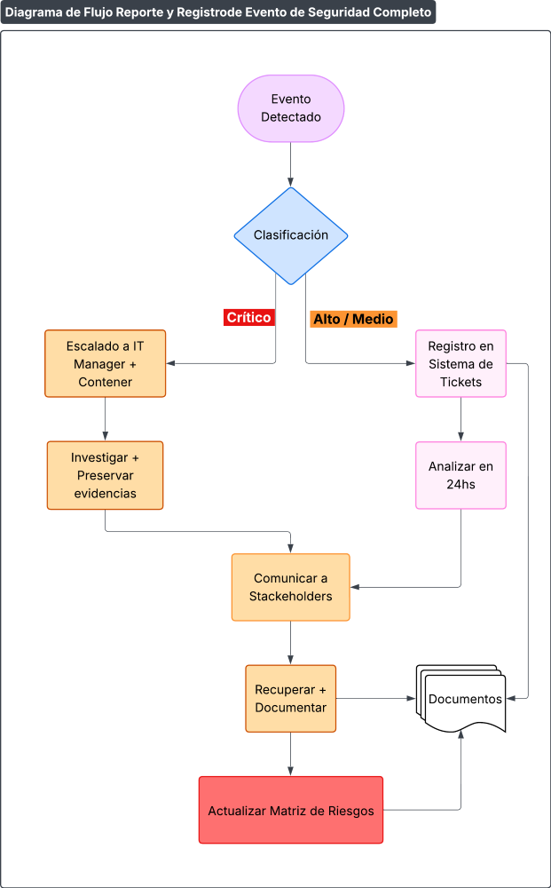

Procedimiento de Eventos de Seguridad de la Información
1 OBJETIVO
Establecer un proceso estructurado para identificar, reportar, escalar y resolver eventos o vulnerabilidades, con foco en activos críticos (CATIA/NX, SIP) y en cumplimiento de normativas de ISO/IEC 27001:2022, así como los requisitos del marco TISAX y clientes automotrices.
2 DEFINICIONES CLAVE
| Término | Definición | Ejemplo |
|---|---|---|
| Evento de Seguridad | Incidencia que compromete CID (ej.: acceso no autorizado a CATIA). | Intento de phishing a empleados de ingeniería. |
| Vulnerabilidad | Debilidad técnica u organizativa explotable (ej.: servidor sin parches). | Windows Server 2019 sin última actualización. |
3 PROCEDIMIENTO DE REPORTE Y REGISTRO
Flujo de Notificación:

Diagrama de Flujo del Proceso de Notificación de Eventos de Seguridad
Canales de Reporte:
- Formulario Web: F161-IT-1 Formulario de Reporte de Eventos por Departamento
- Email: itprodismo@prodismo.com
Formulario de Reporte (Ejemplo):
| Campo | Detalle |
|---|---|
| Departamento | Ingeniería/Administración/Proyectos. |
| Tipo de Evento | Phishing/Ransomware/Acceso no autorizado. |
| Activo Afectado | CATIA/SIP/Windows Server. |
| Gravedad Estimada | 🔴 Crítico/🟠 Alto/🟡 Medio. |
4 ÓRGANO DE PROCESAMIENTO
Equipo de Respuesta:
| Rol | Responsabilidades |
|---|---|
| IT Manager | Coordinar acciones críticas y comunicación con dirección/clientes. |
| SOC (TI) | Contención técnica (ej.: aislar servidor, bloquear IPs maliciosas). |
| Legal | Gestionar notificaciones a clientes (ej.: BMW por fuga de diseños). |
5 PROCEDIMIENTO DE RESPUESTA
Pasos para Eventos Críticos (ej.: Ransomware en Servidor):
- Contención:
- Desconectar servidor afectado.
- Activar backups offline (NAS).
- Investigación:
- Identificar vector de ataque (ej.: email con malware).
- Preservar logs como evidencia.
- Comunicación:
- Interna: Notificar a dirección en menos de 2h.
- Externa: Reportar a BMW/VW si afecta sus datos (en menos de 24h).
- Erradicación y Recuperación:
- Eliminar malware + restaurar desde backup validado.
6 TRAZABILIDAD Y DOCUMENTACIÓN
Registro Obligatorio:
| ID | Evento | Fecha/Hora | Activo | Acciones | Estado |
|---|---|---|---|---|---|
| INC-001 | Phishing a SIP | 15/10/2024 09:30 | SIP4.0 (ERP) | Bloqueo de dominio + capacitación. | Cerrado |
| INC-002 | Phishing a Empleado Administración | 23/09/2025 11:57 | Cuenta correo corporativo proveedores2@prodismo.com | Bloqueo de cuenta + Rotación de contraseñas + capacitación. | Cerrado |
Herramientas:
- SIEM (Microsoft Sentinel) para correlación de logs.
- Ticketing (STI) para seguimiento.
7 MEDIDAS DISCIPLINARIAS Y TÉCNICAS
Sanciones por Negligencia:
- Acceso no autorizado a CATIA por compartir credenciales → Suspensión + capacitación obligatoria.
Mejoras Técnicas:
- Automatizar parches en Windows Server tras evento.
Plantillas Clave
A. Informe Post-Incidente
Evento: Ransomware en servidor (15/10/2024).
Causa Raíz: Email malicioso a usuario de Ingeniería (adjunto .ZIP).
Lecciones Aprendidas:
- Implementar sandbox para adjuntos en correos.
- Capacitar en identificación de phishing.
Firma del IT Manager: __________________________
B. Comunicación a Clientes
Asunto: Notificación de Incidente en Diseños CATIA
"Estimado equipo de [Nombre cliente],
El xx/xx/202x detectamos un acceso no autorizado a diseños CATIA. Contuvimos el evento en menos de 2h y confirmamos que no hubo fuga de datos. Adjuntamos informe técnico.
Contacto: gmontalbetti@prodismo.com.
Atentamente,
Germán Montalbetti
IT Manager Prodismo."
8 DIAGRAMA DE FLUJO COMPLETO

Diagrama de Flujo Completo del Proceso de Eventos de Seguridad
9 REVISIONES DEL DOCUMENTO
| Rev. N° | Fecha | Descripción |
|---|---|---|
| 0 | 25/8/2025 | Primera Emisión del documento |
| 1 | 15/1/2026 | Revisión completa del documento |